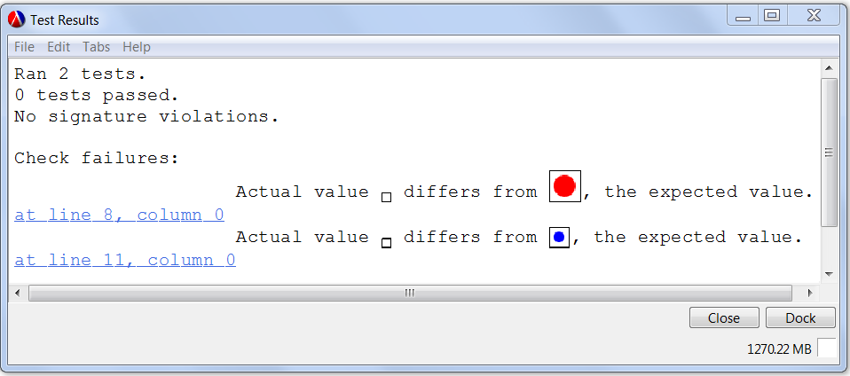
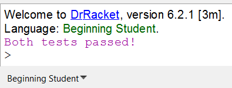
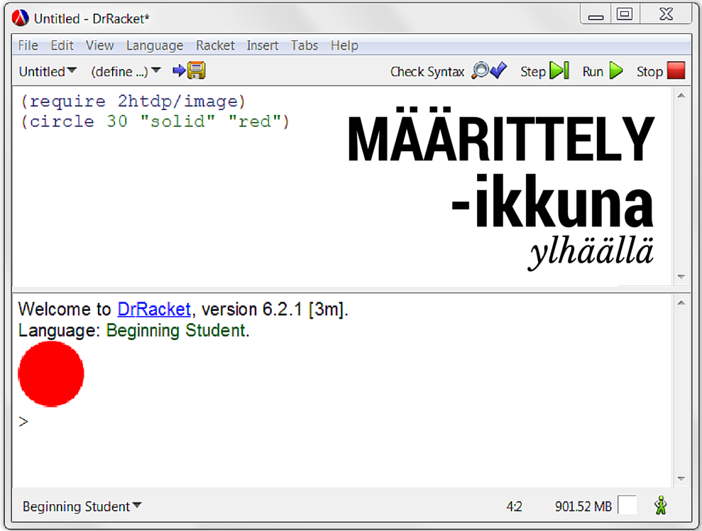

9 Sanasto
argumentti
argument
Funktiokutsussa annettavan syötteen (muuttujan) arvo.
Esim. funktiota sqrt kutsutaan argumentilla 2
(sqrt 2)
Kutsutaan myös "todelliseksi parametriksi" (actual parameter).
arvo
value
Arvo on ohjelmointikielen lauseke, jota ei voi sieventää enää pidemmälle. Arvo voi olla esim. luku, kuva, merkkijono tai totuusarvo. Arvon evaluointi tuottaa saman arvon.
Esim. luvun 6 arvo on 6
> 6 6
Esim. merkkijonon ”joo” arvo on ”joo”
> "joo" "joo"
Kutsutaan myös literaaleiksi.
arvojoukko
range
Funktion arvojoukolla voidaan määritellä minkä tyyppisiä arvoja se palauttaa.
Esim. funktio ”positive?” palauttaa arvon, joka on tyyppiä totuusarvo, joten sen arvojoukko on totuusarvot.
procedure
(positive? x) → totuusarvo
x : luku
> (positive? 2.5) #true
> (positive? -2) #false
askeltaja / stepperi
stepper
Toiminto DrRacketissä, jonka avulla voidaan evaluoida koodia lauseke-lausekkeelta ja nähdä evaluoinnin välivaiheet erillisessä ikkunassa.
Huom! WeScheme:ssä ei ole tätä toimintoa.
Stepper käynnistetään DrRacket:in oikeasta yläkulmasta painamalla Step-nappia.
Stepper-ikkunan vasemmalla puolella näkyy kulloinkin evaluoitavana oleva lauseke vihreänä, ja oikealla puolella evaluoinnin tulos violettina. Seuraava askel evaluoidaan, kun käyttäjä painaa Step-nappia.
BSL
Beginning Student Language
DrRacketin sisäänrakennettu harjoittelukieli, jossa on vähemmän toimintoja, mikä mahdollistaa mm. selkeämmät virheilmoitukset.
Boolean operaattori
Boolean operator
Boolean operaattorit ovat funktioita, jotka ottavat sisäänsä totuusarvoja ja palauttavat totuusarvoja. Näitä ovat mm. and, or ja not.
> (and #t #f) #false
> (or #t #f) #true
> (not #f) #true
Boolean operattoreita käytetään usein yhdistelemään ehtoja ehtolauseissa sekä valintalauseissa.
Tässä yksi esimerkki and:n käytöstä muuttujan (t) tyypin tarkistamiseen ennen vertailuoperaattorin käyttämistä:
(cond [(and (number? t)(< t 0)) "negatiivinen"] [(and (number? t)(> t 0)) "positiivinen"] [(and (number? t)(= t 0)) "nolla"] [else "ei ole luku"])
cons-solu
cons cell
Cons-solujen avulla voidaan muodostaa monimutkaisiakin tietorakenteita, joihin voidaan tallentaa paljon tietoa. Cons-solut muodostuvat kahdesta tietoalkiosta (vasen ja oikea tietoalkio). Yksinkertaisimmassa cons-solussa vasen tietoalkio sisältää jotain hyödyllistä ja oikea on tyhjä lista eli '(), eli ilmaisee tietorakenteen päättymistä.
> (cons 1 '()) '(1)
Listat muodostuvat sisäkkäisistä cons-soluista. Listan viimeisen cons-solun oikea tietoalkio on tyhjä lista '().
> (list 1 2 3) '(1 2 3)
DrRacket
Avoimen lähdekoodin ohjelmointiympäristö, joka tukee useampaa ohjelmointikieltä ml. Racket ja BSL.
ehtolause
if expression, if-then-else expression
Ehtolauseen avulla saadaan koodi haarautumaan kahteen eri haaraan: tosihaara tai epätosihaara riippuen ehto-lausekkeen totuusarvosta.
Esim. Seuraavassa (> a 0) on ehto-lauseke. Jos se tuottaa arvon #true eli a on suurempi kuin nolla, if-lausekkeen arvoksi saadaan tosihaara-lausekkeen arvo eli ”suurempi”, muuten epätosihaara-lausekkeen arvo eli "pienempi".
(if (> a 0) ”suurempi” ”pienempi”)
evaluointi
evaluation
Lausekkeen sieventäminen kunnes saadaan selville sen arvo (funktionaalisessa ohjelmoinnissa).
Esim. lausekkeen (+ 1 2) evaluointi tuottaa arvon 3
> (+ 1 2) 3
funktio
function
Yleensä yhden toiminnon suorittamiseen ohjelmoitu, uudelleenkäytettävissä oleva ohjelman pätkä, joka palauttaa erilaisia arvoja riippuen sille annetusta syötteestä eli argumenteista (muuttujien arvoista).
Esim. tässä määritellään funktio neliön-pinta-ala, joka laskee neliön pinta-alan:
(define (neliön-pinta-ala x) (* x x))
Tässä kutsutaan funktiota neliön-pinta-ala muuttujan x eri avoilla. Ensimmäisessä funktion argumenttina annetaan 4 toisessa 50
> (neliön-pinta-ala 4) 16
> (neliön-pinta-ala 50) 2500
funktion suunnitteluportaat
"how to design functions" design recipe
Järjestelmällinen tapa suunnitella ja ohjelmoida funktio. Koska funktion suunnittelu on aloittelevalle ohjelmoijalle varsin vaikeasti hahmotettavissa oleva asia, seuraamalla funktion suunnitteluportaita ongelma jakautuu pienempiin, yksinkertaisiin askelmiin eli ei yritetä hypätä katolle yhdellä (mahdottomalla) loikalla.

Tässä esimerkissä seuraamme funktion suunnitteluportaita ja määrittelemme funktion ympyrä, joka piirtää eri värisiä ympyröitä.
0. askelma: Kirjoita funktion tarkoitus kommenttiriville:
; piirtää eri värisiä ympyröitä, kun säde on annettu
1. askelma: Esittele funktio eli keksi sille kuvaava nimi (tässä ympyrä), listaa tiedot joita se käyttää (tietotyypit) sekä päätä mitä funktiosi palauttaa (tietotyyppi).
; piirtää eri värisiä ympyröitä, kun säde on annettu ; ympyrä : Luku Väri -> Kuva
2. askelma: Kirjoita funktion runko eli stub. Nimeä funktion parametrit kuvaavilla nimillä. Jotta koodin voi ajaa, tämän tyhmänkin funktion on palautettava jotain oikean tyyppistä mutta "tyhmää" (tässä empty-image).
; piirtää eri värisiä ympyröitä, kun säde on annettu ; ympyrä : Luku Väri -> Kuva (define (ympyrä säde väri) empty-image) ; stub
Menetelmän nerokkuus piilee siinä, että ensin ohjelmoidaan esimerkkejä siitä miten funktion pitäisi toimia eri argumenttien arvoilla, joten asiaa lähestytään konkretian kautta. Vasta tämän jälkeen asia yleistetään eli yksittäinen ratkaisu muutetaan yleiseksi käyttämällä konkreettisten arvojen tilalla parametrien nimiä (abstraktio).
3. askelma: Kirjoita esimerkkejä/testejä siitä miten funktiosi pitäisi toimia.
; piirtää eri värisiä ympyröitä, kun säde on annettu ; ympyrä : Luku Väri -> Kuva (define (ympyrä säde väri) empty-image) ; stub (check-expect (ympyrä 10 "red") (circle 10 "solid" "red")) (check-expect (ympyrä 5 "blue") (circle 5 "solid" "blue"))
Nyt paina run, niin huomaat, että check-expect lausekkeet toimivat testeinä. Ne ilmoittavat, että ympyrä-funktio ei toimi kuten sen pitäisi (eikä se tietenkään toimi, koska se on vasta "tyhmä" stub.

4. askelma: Korvaa "tyhmä" stub funktion toteutuksella. Usein voit kopioida yhden esimerkin/testin ja vaihtaa vakioiden tilalle parametrien nimet (tässä säde ja väri).
; piirtää eri värisiä ympyröitä, kun säde on annettu ; ympyrä : Luku Väri -> Kuva (define (ympyrä säde väri) (circle säde "solid" väri)) ; ok (check-expect (ympyrä 10 "red") (circle 10 "solid" "red")) (check-expect (ympyrä 5 "blue") (circle 5 "solid" "blue"))
WeScheme ei ilmoita mitään, jos testit toimivat ok.

interaktioikkuna
interactions window
DrRacket:in (tai WeScheme:n) ikkuna, jossa voidaan testata yksittäisten lausekkeiden toimintaa. Koodia ei voi tallentaa ja se suoritetaan painamalla <enter>. Edellisen koodirivin voi palauttaa näkyville muokkaamista varten painamalla Ctrl+↑ (DrRacket) tai Ctrl+p (WeScheme).
Interaktioikkunassa näytetään myös määrittelyikkunassa ajetun koodin tuottama tulos (arvo).
Interaktioikkuna sijaitsee joko alhaalla tai oikealla, riippuen käytetyistä asetuksista.
kirjasto
library
Valmiiksi koodattuja toimintoja, joilla voi laajentaa käytettyä ohjelmointikieltä.
Esim. kuvien piirtämiseen on Racketissä oma kirjastonsa, joka otetaan käyttöön näin:
(require 2htdp/image)
kommentti
comment
Koodin sekaan voi kirjoittaa selventävää tekstiä, merkitsemällä sen kommentiksi. Kun koodi suoritetaan, nämä rivit hypätään yli.
Esim.
;tämä on kommentti
lauseke
expression
Yksi ohjelmointikielen evaluoitavissa oleva ilmaus. Se voi olla arvo, kuten luku, totuusarvo tai merkkijono, tai se voi olla funktiokutsu, joka sisältää muuttujia ja/tai vakioita. Lauseke voi myös sisältää muita lausekkeita.
Esim. seuraavat ovat Racket-kielen lausekkeita:
(+ 1 2) 6 (string-append ”joo” (number->string 6))
luku
number
Luku voi Racket-kielessä olla kokonaisluku, rationaaliluku, irrationaaliluku, reaaliluku tai kompleksiluku. Jos luvun edessä on merkintä #i se merkitsee sitä, että luku on epätarkka. Päättymättömän jaksollisen desimaalikehitelmän jakso merkitään sen yläpuolelle vedetyllä viivalla. Kymmenpotenssit ilmoitetaan 5e3 (=5000.0).
Esim. erilaisista Racket - kielen luvuista
-1 1/3 #i1.4142135623730951 5000.0
merkkijono
string
Tietotyyppi, joka sisältää määrittelemättömän määrän merkkejä lainausmerkkien sisällä. Racket-kielen merkkijono ei saa sisältää ” ( ) merkkejä.
Esim.
"tämä on merkkijono" "0123456789abcDEF!$%^&*_+-=?<>"
muuttuja
variable
Tallennettu arvo, johon voidaan viitata sen nimellä.
Esim. globaalin muuttujan a arvoksi asetetaan 5 (vrt. vakio)
(define a 5)
Myös funktion parametreja voidaan kutsua muuttujiksi
määrittelyikkuna
definitions window
DrRacket:in (tai WeScheme:n) ikkuna, johon varsinainen koodi kirjoitetaan. Koodin voi tallentaa tiedostoon ja suorittaa run-napilla tai painamalla Crtl+r.
Määrittelyikkuna sijaitsee joko ylhäällä tai vasemmalla, riippuen käytetyistä asetuksista.

määrittelyjoukko
domain
Funktion määrittelyjoukon avulla voidaan määritellä minkä tyyppisiä syötteitä se vastaanottaa.
Esim. funktio ”positive?” ottaa syötteeksi luvun, joten sen arvojoukko on luvut.
procedure
(positive? x) → totuusarvo
x : luku
> (positive? 2.5) #true
> (positive? -2) #false
paketti
package
DrRacket:in asennuksessa on mukana monta pakettia, esim. 2htdp/image ja 2htdp/universe kirjastot tulevan sen mukana automaattisesti eikä niitä tarvitse erikseen asentaa.
Huom! WeScheme:ssä ei ole Package Manager:ia. Laajennuskirjastot otetaan siinä käyttöön suoraan require-komennolla. Huomaa, että WeScheme-kirjastoilla on eri nimet kuin vastaavalla DrRacket-kirjastoilla (WeScheme-kirjaston nimi on muotoa wescheme/xxxxxxxxxxxx). Kaikkia kirjastoja ei ole myöskään saatavilla WeScheme:lle.
parametri
parameter
Funktion määrittelyssä käytettäviä muuttujia kutsutaan funktion parametreiksi.
Esim. määritellään funktio summa, joka saa kaksi parametria x ja y
(define (summa x y) (+ x y))
Kutsutaan myös "muodolliseksi parametriksi" (formal parameter).
predikaatti
predicate
Funktio, joka palauttaa totuusarvon. Tällaisia ovat mm. vertailuoperaattorit sekä funktiot jotka testaavat muuttujien tyyppiä. Näiden funktioiden avulla voidaan varmistaa mm. että saadut argumentit ovat oikean tyyppisiä.
Predikaattien number?, string? ja image? avulla voidaan testata muuttujien a, b ja c tyyppejä:
> (number? a) #true
> (string? b) #true
> (image? c) #true
primitiivi
primitive
Ohjelmointikieleen sisäänrakennettu (perus)toiminto.
Esim. Racket-kielen primitiivejä ovat mm.:
rekursio
recursion
Funktiota, joka kutsuu itse itseään kutsutaan rekursiiviseksi funktioksi. Rekursion avulla voidaan tehdä toistorakenne eli silmukka.
sieventäminen
reduction
Lausekkeen muuttamista yksinkertaisimpaan muotoonsa niin, että sen arvo pysyy samana.
suorita / aja
execute / run
Evaluoidaan koodia (funktionaalinen ohjelmointi).
Yleisemmin koodin muuntamista ohjelmointikielestä tietokoneen ymmärtämiksi konekielisiksi käskyiksi (kääntäminen) ja näiden käskyjen ajamista (suorittaminen).
syntaksi
syntax
Koodin täytyy olla kyseisen ohjelmointikielen lauseopin mukaista eli sen täytyy olla sekä sanastonsa, että kielioppinsa puolesta oikeanlaista, jotta kyseisen ohjelmointikielen kääntäjä (tai tulkki) pystyy evaluoimaan/suorittamaan sitä.
tietotyyppi
data type
Jokaisella vakiolla ja muuttujalla on oma tietotyyppinsä, joka määrää mitä operaatioita sille voidaan suorittaa.
Esim. Racket-kielen tietotyyppejä ovat mm. luku, merkkijono, kuva ja totuusarvo
tietue
struct
Tietorakenne, johon voi tallentaa monta muuttujaa eli kenttää. Muuttujat voivat olla keskenään eri tyyppisiä. Yleensä tietuetta käytetään, kun halutaan tallentaa samaan asiaan liittyviä tietoja.
Esim. Määritellään uusi oppilas-tietue, johon voidaan tallentaa oppilaan etunimi, sukunimi ja ikä.
(define-struct oppilas (etunimi sukunimi ikä))
(make-oppilas "Ninni" "Nokkonen" 14)
totuusarvo
Boolean value
Arvo, joka voi voi olla joko tosi tai epätosi
Esim.
#true #false true false #t #f
tulkki
interpreter / REPL = Read Eval Print Loop
Vrt. interaktioikkuna
vakio
constant
Arvo, joka ei muutu ohjelman suorituksen aikana.
Esim. a ja KUVA eivät muutu näiden määrittelyjen jälkeen
(define a 5) (define KUVA (circle 50 "solid" "red"))
valintalause
cond expression (Racket), case (joissakin muissa ohjelmointikielissä)
Valintalauseen avulla koodi saadaan haarautumaan useampaan kuin kahteen haaraan (vrt. ehtolause). Valintalause koostuu ehto-lauseke ja seuraus-lauseke pareista, sekä else-lausekkeesta. ehto-lausekkeiden totuusarvot tutkitaan järjestyksessä, kunnes löydetään ensimmäinen tosiarvo. Tähän ehto-lausekkeeseen liitetty seuraus-lauseke palautetaan koko valintalausekkeen tuloksena.
Esim. tässä cond-lausekkeessa on kolme ehto-lauseketta (< a 5), (> a 5) ja (= a 5). Jos muuttujan a arvo on 5 kaksi ensimmäistä ehtoa eivät toteudu ja koko lausekkeen arvona palautetaan "yhtäsuuri".
(cond [(< a 5) "pienempi"] [(> a 5) "suurempi"] [(= a 5) "yhtäsuuri"] [else "virhe"])
vertailuoperaattori
comparison operator
Vertailuoperaattoreiksi voidaan kutsutaan kaikkia funktioita, joiden avulla voidaan verrata sen saamia argumentteja toisiinsa, ja vastata totuusarvolla tosi (#true) tai epätosi (#false). Lukujen keskinäistä suuruutta voidaan verrata <, >, <=, >= ja = operaattoreiden avulla. Voimme siis esimerkiksi testata onko muuttujan a arvo pienempi, suurempi tai yhtäsuuri kuin 5:
> (< a 5) #false
> (> a 5) #false
> (= a 5) #true
Voimme verrata toisiinsa myös muita kuin lukuja. Jos haluamme tietää ovatko kaiksi merkkijonoa samat, vertaamme niitä toisiinsa string=?-funktion avulla. Kaksi kuvaa ovat samat, jos image=?-funktio palauttaa #true.